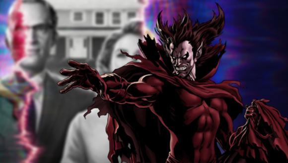
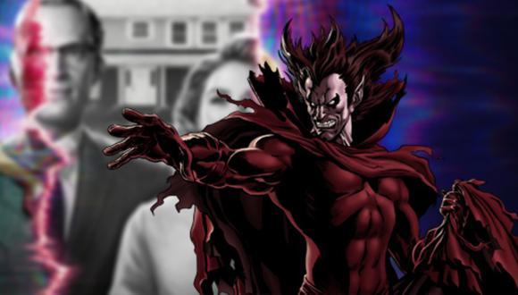

The Daily Bugle - Tu mejor Refugio Aracnido

The Daily Bugle - Tu mejor Refugio Aracnido

Antes que nada, de donde proviene? este demonio viene un una dimensión similar al infierno, Aquí es el gobernador
y se encarga de torturar a las almas que el tiene de esclavas, su habilidad mas destacable es que logra por
cualquier medio hacerse con las almas de sus victimas.
Y su acto mas polémico, en el arco de One More Day, la tía May es herida de gravedad, debido a que Peter revelo su
identidad, en un acto de desesperación, Peter y Mary Jane le ofrecen su matrimonio a cambio de la vida de May, Mephisto
pidio el matrimonio de ellos, ya que el amor de ellos solo se ve cada cierto tiempo...
Sin Duda alguna, Mephisto a lo largo de estos años, ha logrado una gran noteriedad como un gran villano, y que sin duda alguna
esperamos que haga acto de presencia en WandaVision?.
Cuéntanos, lo esperas a el manipulando a Wanda o a alguien mas? te leemos en la caja de comentarios.